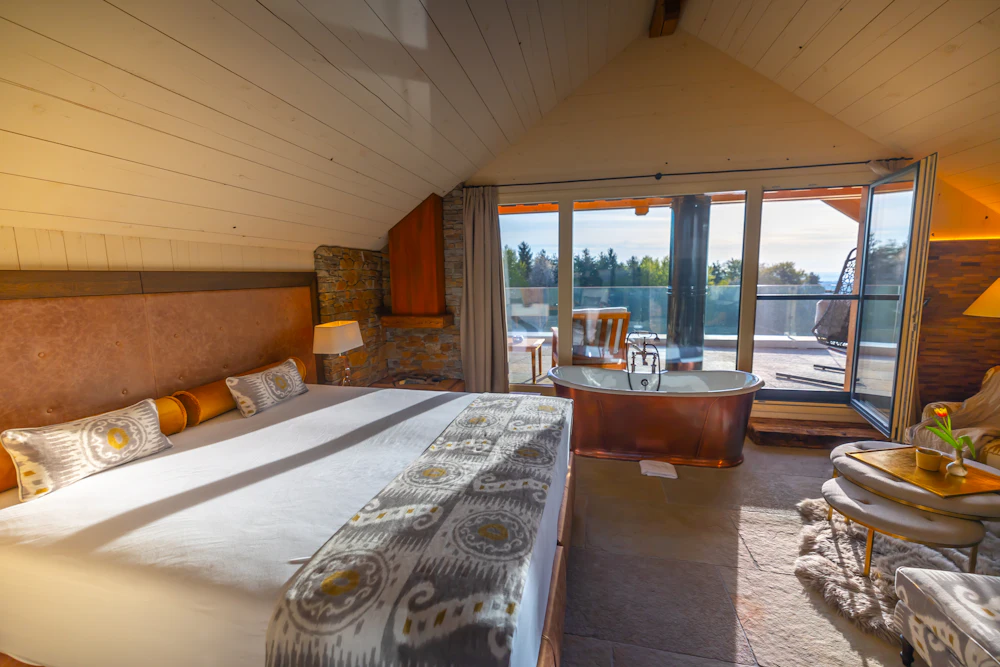
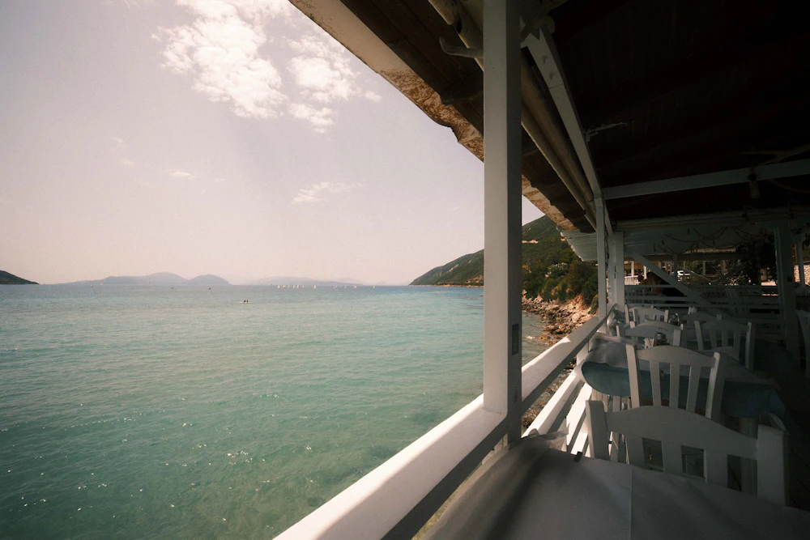
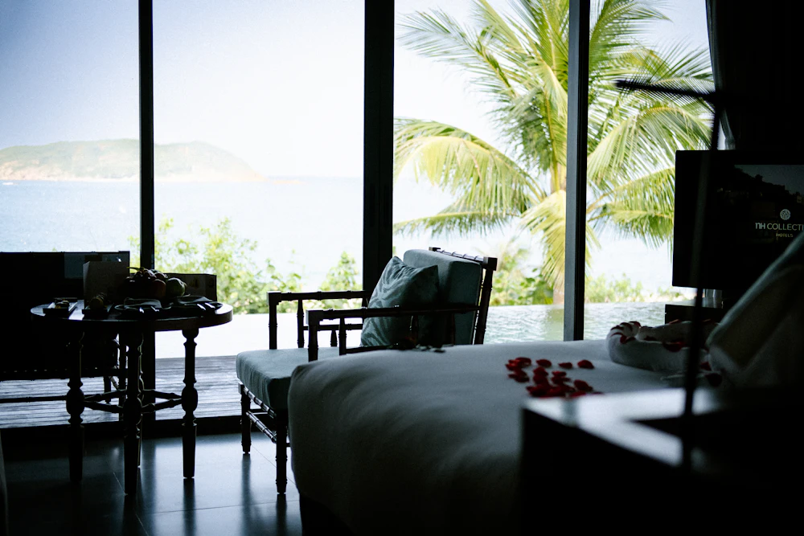
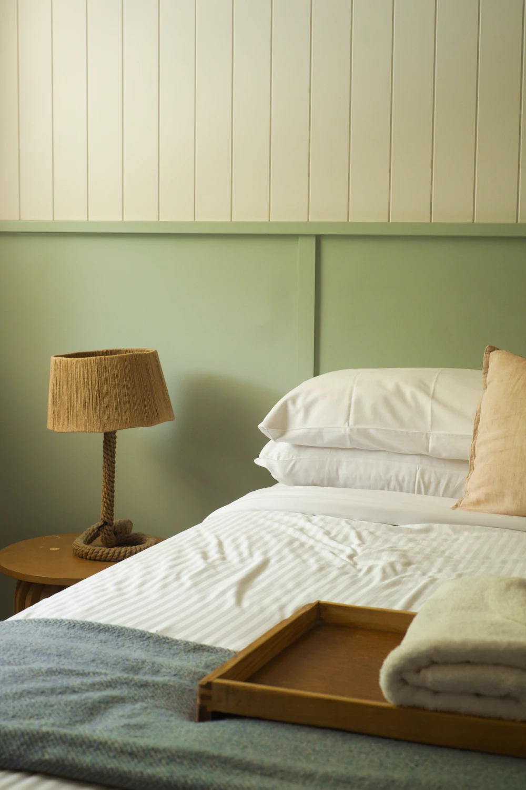
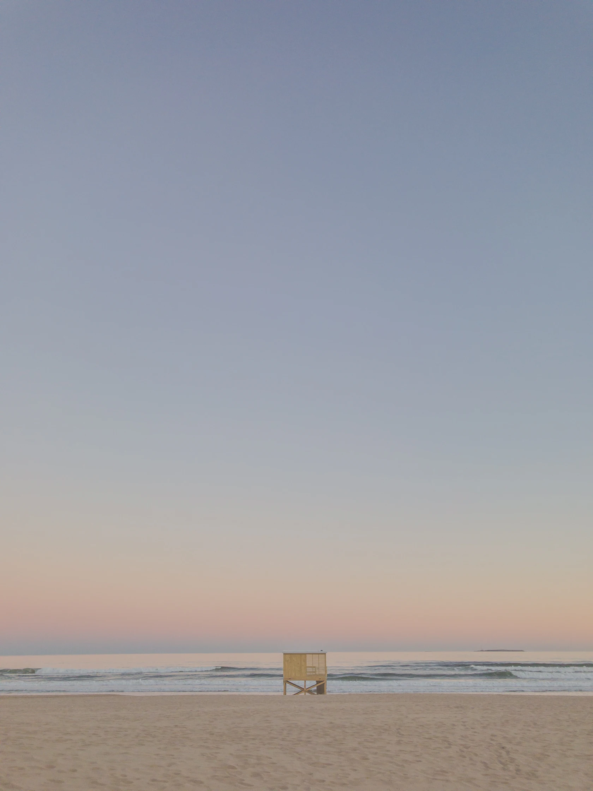

POUR DEUX · VUE SUR L’HORIZON
La Dune 148 € / nuit
Lit king size · bain · petit-déjeuner maison

CÔTE ATLANTIQUE · 47° 12' N
Une maison ouverte sur le large, quelques chambres à l’abri du vent et le luxe de ne rien prévoir.
Découvrir la maison ↓LES CHAMBRES
Des refuges simples, ouverts sur la lumière. Le matin, on prend le temps de regarder dehors.
01 — 03
POUR DEUX · VUE SUR L’HORIZON
Lit king size · bain · petit-déjeuner maison

POUR DEUX · CÔTÉ JARDIN
Lit queen size · terrasse · petit-déjeuner maison

POUR TROIS · SUITE CÔTÉ MER
Suite · salon · petit-déjeuner maison

LE JOUR TOMBE, LA MER RESTE.L’ESPRIT DE LA MAISON
Escale est une maison d’hôtes fictive conçue comme une parenthèse. Son site donne à voir l’atmosphère avant le détail pratique : un grand paysage, des chambres lisibles, puis une demande de séjour sans détour.
Préparer une demande de séjour ↘Les photographies sont des images d’ambiance sous licence Unsplash. Elles ne représentent pas un établissement réel.
VOTRE PAUSE AU BORD DE L’EAU
Choisissez vos dates pour découvrir le parcours de demande de séjour. La réservation reste une simulation : aucune donnée personnelle n’est envoyée.
Petit-déjeuner comprisProduits de saison, servis chaque matin.
Une maison à taille humaineQuatre chambres, un accueil attentionné.
LA CÔTE EST LÀ.
LE RESTE PEUT ATTENDRE.